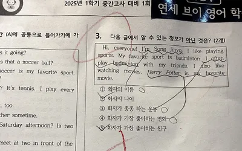
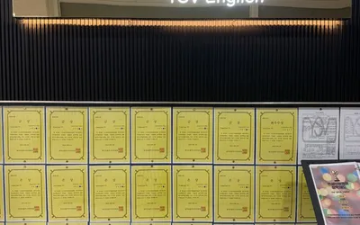
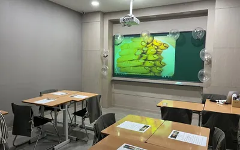
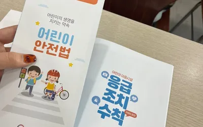
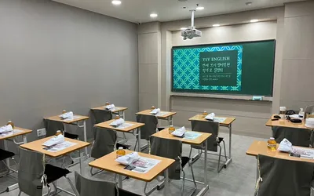
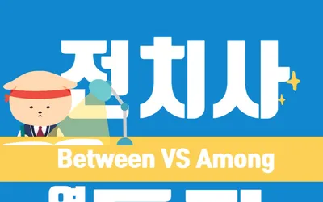
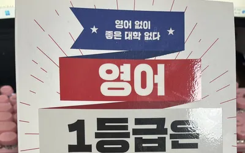

OFFICIAL BLOG·2026.10.17 기준 44건
점수 뒤의 시간까지,
연세브이 공식 블로그
재원생 성장·결과 기록, TOEFL 경시대회·서울대 캠프 같은 학원 일상·행사, 원장 칼럼·영어 팁, 수업 안내까지 한눈에 정리했습니다. 카드를 누르면 네이버 블로그 원문으로 이동합니다.
- 44전체 게시글
- 11성장·결과 기록
- 9원장 칼럼·영어 팁
- 2022.06~발행 기간
모든 게시글은 네이버 블로그(blog.naver.com/vivienne1030) 원문으로 연결됩니다. 2026.10.17 기준.
게시글 목록
GROWTH STORYYSV성장·결과 기록
“엄마, 여기 원장님이 더 잘 가르쳐” — 학부모님께 받은 전화 한 통
GROWTH STORYYSV성장·결과 기록“학원 그만 다니고 싶어요” — 그래도 계속한 두 아이의 점수
YSV DAILYYSV학원 일상·행사[학원 일상] 손 번쩍 드는 초등반, 추석 연휴에도 공부하는 중고등부
YSV DAILYYSV학원 일상·행사시험기간 일요일, 학원 문을 열었습니다
YSV DAILYYSV학원 일상·행사연공이들과 함께한 TOEFL 경시대회 이야기
GROWTH STORYYSV성장·결과 기록시험 끝나자마자 날아온 아이들의 소식
원장 칼럼·영어 팁중1 2학기, 시험도 없는데 우리 아이 영어 잘하고 있는 걸까요?
COLUMNYSV원장 칼럼·영어 팁아이를 혼내지 않는 학원보다, 아이를 포기하지 않는 학원이고 싶습니다
YSV DAILYYSV학원 일상·행사초6 아이들과 서울대 진로 사파리 캠프에 다녀왔습니다
COLUMNYSV원장 칼럼·영어 팁시험이 끝나고 울던 아이에게 해 준 말
학원 일상·행사[학원 일상] 바쁜 아이들을 위한 작은 간식 선물
수업 안내연세브이영어학원 교육 및 수업 운영 안내

성장·결과 기록늦게 시작한 영어, 성적보다 먼저 쌓인 기본기

성장·결과 기록시험이 끝난 뒤 회고지에 적은 한 문장
YSV DAILYYSV학원 일상·행사학생들과 선생님들의 열정이 꽃핀 날
GROWTH STORYYSV성장·결과 기록고등부 졸업생 진학 소식 (2025)
YSV DAILYYSV학원 일상·행사초등부 2024년 하반기 특별한 순간들
NOTICEYSV수업 안내수강료 안내 (2024.10 적용 공지)
GROWTH STORYYSV성장·결과 기록고등부 성적 사례 (2024)
GROWTH STORYYSV성장·결과 기록중등부 성적 사례 (2024)
GROWTH STORYYSV성장·결과 기록고등부 성적 사례 (2024.6)
수업 안내연세브이영어학원 수업 안내 (2024)
NOTICEYSV수업 안내조암중·월서중·대진고·대구외고 시험대비
NOTICEYSV수업 안내초1·초2 Hi kids반 / 초3·4반 개강 안내

학원 일상·행사[학원 일상] 수업 후 학부모님들 반응

학원 일상·행사[안전 교육] CPR 교육을 받고 왔습니다
수업 안내대구 대진고 수업 안내

학원 일상·행사[학원 일상] 학부모 설명회
학원 일상·행사[학원 일상] 수업 후 학부모님들 반응
원장 칼럼·영어 팁우리 아이가 쓰는 교재와 커리큘럼 이야기
학원 일상·행사[학원 일상] 9월 모의고사 결과
YSV DAILYYSV학원 일상·행사[학원 일상] 학원 이야기
수업 안내시험대비 이벤트 — 공부 가즈아!
YSV DAILYYSV학원 일상·행사[학원 일상] 학부모 설명회 후기
GROWTH STORYYSV성장·결과 기록졸업생 수강 후기 (2022.8)
원장 칼럼·영어 팁연세브이영어학원의 차별화는 뭐죠?
수업 안내학부모 설명회에 초대합니다
GROWTH STORYYSV성장·결과 기록졸업생 수강 후기 (2022.8 ②)
학원 일상·행사[학원 일상] 공부가 잘 되는 환경
원장 칼럼·영어 팁카톡 영어 문법 질문: that / if / whether
원장 칼럼·영어 팁[오늘의 영어표현] 생활의 지혜, 꿀팁 영어로? — TED talk

원장 칼럼·영어 팁[전치사] Between VS Among

원장 칼럼·영어 팁책 소개: 영어 1등급은 이렇게 공부한다
NOTICEYSV수업 안내수강료 안내
검색 결과가 없습니다. 다른 검색어나 카테고리를 선택해 보세요.
※ 카드의 제목은 학생 보호를 위해 정리한 것으로, 네이버 원문 제목과 다를 수 있습니다. 성장·결과 기록은 실명을 공개하지 않으며, 개인 사례로서 특정 성적 향상이나 합격을 보장하지 않습니다. 표시 제목은 원문 제목을 요약·정리한 것입니다.